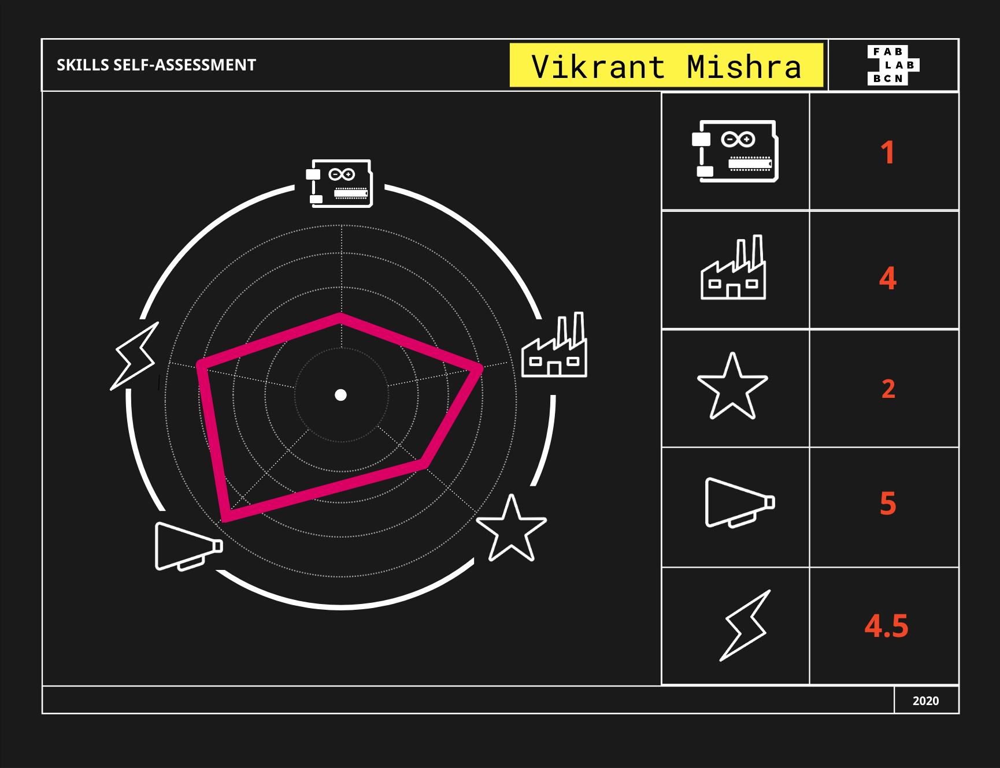

TERM II
Tech Beyond the Myth
Forensics of the Obsolescense
Princess Induction Cooker
The product that our group dedicated to dissect was the Princess Induction Cooktop. The activity was very insightful in learning about the components that we never thought existed in our everyday devices in the kitchen.
The panel disclosed a plate of ‘inductive-glass’ material separated by a predetermined thickness. Discrete conductive film areas such as tin oxide were present on the outer planar surface of the plate. A printed circuit board included a plurality of pairs of spaced apart conductive regions formed of copper or the like thereon. Springs are provided to push the printed circuit board continually against the inner surface of the plate, exactly below the film areas on the outer surface of the plate. Circuitry is connected on the printed circuit board and is coupled to the conductive regions in order to generate electrical signals in response to contact with the film area by a finger of the operator. By touching various ones of the film areas formed on the plate, the operator can then control the energization and heating level of the induction heating coils located in the cook-top. Further research made the group come across a registered patent for the mechanism filed in 1977.

The component that caught my attention the most was the Heat-sink. It’s a component that increases the heat flow away from a hot device. This is accomplished by increasing the device's working surface area and the amount of low-temperature fluid that moves across its enlarged surface area. Looking more into the engineering of this component, it was realized that the working is based on Fourier's law of heat conduction.
You can find the Forensics report here.
Measuring the World
Locating Local Food using Data Scraping
Our proposed hypothesis revolved around questioning whether the majority of food in the IaaC vending machine was locally produced or not. We identified all of the products in the vending machine using the Open Food Facts application. It is a community driven and open source platform from which you can download the whole API. We could find where the products were sold, but only sometimes we could find where it was “produced” and what ingredients the product had. When looking for their origin, it was intensively hard to find the exact location. There was a severe lack of product traceability. Addressing this problem, we wanted to create a script that would scrape Open Food Facts and write all the ingredients of the products into an excel spreadsheet.
In 2002, the European Union passed a law (the General Food Law) that enforces traceability. All food and feed businesses must have a traceability system, where they record the supplier, customer, what kind of product was delivered and when. The platform has a free sign-up process but the account needs to be confirmed by someone on the admin end at the European Union Commision. It eventually resulted in a dead end.
We found one of the datasets that CIAT used to build their infographics. From this, some info about imports and exports that were relevant to the ingredients in the vending machine, was picked. Certain data that shows how much (% of total weight) of X product is exported from X region, was gathered. Some data also showed what regions were exporting what quantity of produce/products to Spain (but does not divide by the ingredient and proportions).
We decided to buy a sandwich from the vending machine and trace the possible origins of the main ingredients, using OEC’s data concerning Spain’s imported products. The main components in this sandwich were wheat, pig meat, cheese, nuts, eggs, yeast and olive oil. All these items were reportedly imported from France, Bulgaria, Netherlands, Germany, Portugal, United States and France.
In conclusion, we realized that it is very difficult to retrieve information about where food comes and goes in the EU ecosystem. There is a lack of transparency regarding the movement of goods within the system. There is no detailed information available to the public about food sources. The process made us recognise that Web Scraping is an option, but not always the best or more efficient one.
Concluding enquiries that could help unearth more data and solution on this experience:
How can we re-imagine the vending machine? Can we think of a better and more transparent alternative?
If we could trace all our food, we could create legislation that could regulate and promote the circular economy.
Why don’t we question the transparency of our food system more often? It’s a basic human right.
If we can trace food, how will it change the industry?
Can we accurately track the carbon emissions of our food?
You can access the Final Report here and the Presentation here.
Almost Useless Machines
The Loner Booth
TAUM has been one of my favorite modules so far at MDEF. The process began with the ideation on what feelings we wanted to address. As a group we decided on focusing on the feeling of being astray or ‘lost’. In the initial parts of the grading activity I graded myself the highest in communication. Regardless, my involvement was divided well amongst the process of fabrication and assembly. The fabrication process involved parametric modelling and laser-cutting of corrugated sheets.
Can a machine aid loneliness?
One's need for inclusivity and feeling connected is addressed at the Loner Booth, where you can interact with the machine and make yourself smile.
In simple words, Conductive touch was used as an input. This system was calibrated with the code to control the speed of the fan. This made the balloon elevate at different heights at different frequencies.

You can find the process and the Final Presentation here.
In the Experimental Documentation classes facilitated by Kate Armstrong, following video was recorded using one of the sandwiched layers from the Diffusion sheet (obtained from the forensics activity for the LCD screen). The phenomena that we are observing in the video is vertical linear polarisation. You can find out more about this here.